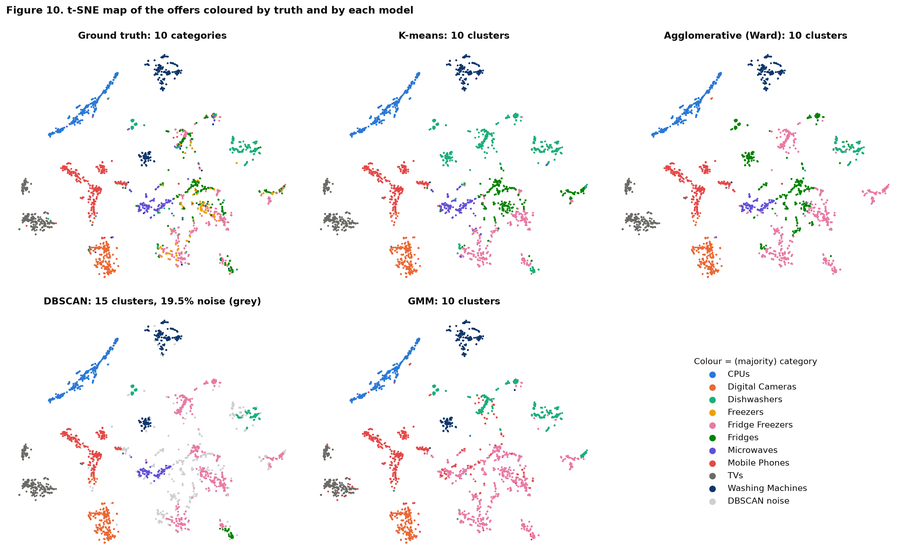
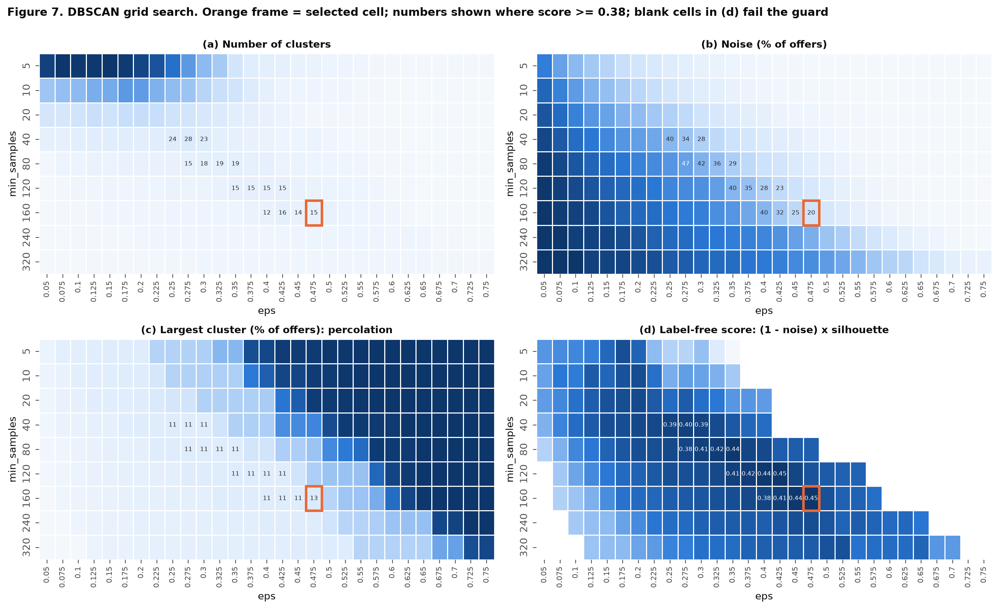
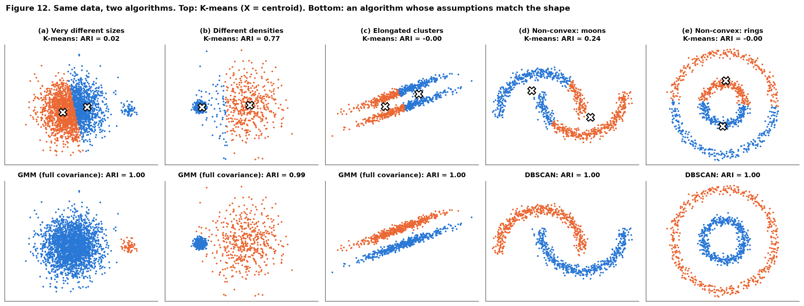
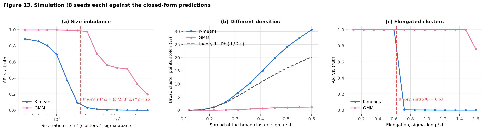
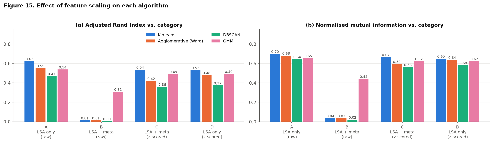
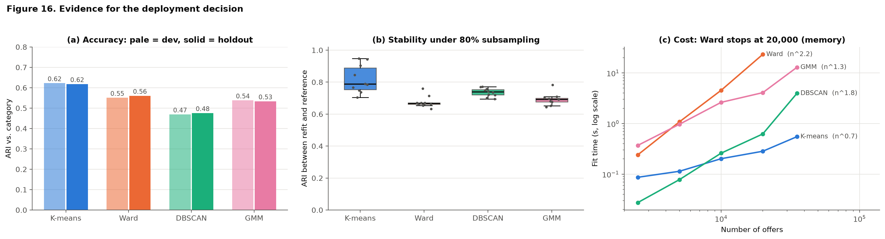

- Student
- Sohail Zulfiqar
- Registration ID
- 578135
- Program
- MS GIS & RS, 2025
- Instructor
- Dr Hammad Gilani
- Product offers
- 35,31110 categories, 306 merchants
- Held out
- 25,311never used for fitting or tuning
- K-means ARI
- 0.62NMI 0.70, on the held-out offers
- Stability
- 0.82K-means, mean ARI on 80% resamples
Report, code and data
Everything is in the repository; the PDF and HTML files open directly from this site.
Read the report
The written report, as a PDF, plus a one-page summary.
See the code
The notebook with all code and output: as an HTML page, on GitHub, or run it yourself in Colab.
Use the data
The PriceRunner product-offer data the notebook downloads, and the Python packages it needs.
Objective and data
A price-comparison engine receives merchant offers whose titles are free text, such as "apple iphone 8 plus 64gb silver". The task is to group offers into coherent product families with four clustering algorithms, compare them honestly, and recommend one for deployment. New merchants arrive without labels, which is why clustering is attractive.
The data are 35,311 offers with a title, a merchant, a fine product id (13,233 products) and a coarse category label (10 categories, such as mobile phones, CPUs and dishwashers). The category labels are used only to score clusters, never to fit them.
Method
The steps of the notebook, in order.
- Audit. No missing values. 4,318 offers (12.2%) repeat another title exactly and are kept, categories are imbalanced 2.5 to 1, and titles are short (median 52 characters) and partly German.
- Split without leakage. A stratified 10,000-offer dev set is used for every fit and tuning step. The other 25,311 offers are only touched at the end. TF-IDF and the SVD are learned on dev titles only.
- Features. TF-IDF on word 1- and 2-grams, reduced to 20 latent (LSA) dimensions and scaled to unit length, so Euclidean K-means behaves like cosine K-means.
- Number of clusters. No internal index points at 10 (silhouette and Calinski-Harabasz prefer 19), so k = 10 is taken from the retailer's taxonomy and disclosed as such.
- Four algorithms. K-means (a from-scratch version reaches exactly the same partition as scikit-learn), Ward agglomerative clustering, DBSCAN with
epsandmin_sampleschosen by a label-free grid, and a Gaussian mixture with full covariance chosen by BIC. - Evaluate and decide. Adjusted Rand Index (ARI) and Normalised Mutual Information (NMI) against the categories, stability on 80% subsamples, fit time against size, and a final score on the 25,311 held-out offers.
Results
Four models, scored against the 10 categories
| Model | Clusters | Noise (dev) | ARI dev | ARI held out | NMI held out | Stability | Scores a new offer |
|---|---|---|---|---|---|---|---|
| K-means | 10 | 0% | 0.62 | 0.62 | 0.70 | 0.82 | natively |
| Agglomerative (Ward) | 10 | 0% | 0.55 | 0.56 | 0.69 | 0.68 | nearest-neighbour rule |
| DBSCAN (eps 0.475, min_samples 160) | 15 | 19.5% | 0.47 | 0.48 | 0.65 | 0.74 | nearest-core-point rule |
| Gaussian mixture (full covariance) | 10 | 0% | 0.54 | 0.53 | 0.65 | 0.69 | natively, with probabilities |
ARI and NMI: agreement with the true categories (1 is perfect, 0 is chance). Stability: ARI between refits on 80% subsamples. Ward and DBSCAN have no native predict(), so they are scored on held-out offers with a nearest-neighbour rule.
Fit time in seconds
| Offers | K-means | Ward | DBSCAN | Gaussian mixture |
|---|---|---|---|---|
| 10,000 | 0.20 | 4.53 | 0.26 | 2.62 |
| 35,311 | 0.55 | not run: about 5 GB of memory | 3.95 | 12.92 |
Figures
Six of the 16 figures in the notebook; the report has all of them.


min_samples and eps. The framed cell (160, 0.475) is the same one an oracle using the labels would pick.



The four questions
One-line answers; the derivations and evidence are in the report.
1. Why can K-means fail when clusters differ in density, size or shape?
It minimises squared distance to centroids, which is the hard-assignment limit of a Gaussian mixture with equal weights and identical spherical covariances. So it can only represent equal-size, equal-spread, convex clusters. Closed-form tipping points follow: it splits a big cluster rather than isolate a small one once the size ratio passes about 25 (clusters 4 standard deviations apart), and it cuts elongated clusters across once their long-axis spread exceeds √(π/8), about 0.63, of the gap between them. Simulation confirms both: K-means collapses (ARI near 0) where a Gaussian mixture or DBSCAN scores 1.0.
2. How does standardisation change the clusters?
With four unscaled title descriptors added, one feature (title length) carried 93% of the variance and the clusters became bins of title length: K-means ARI fell from 0.60 to 0.01. Z-scoring restored it to 0.54. It is not free, though: the 20 LSA coordinates already share a scale, and z-scoring them lowered Ward (0.55 to 0.48) and DBSCAN (0.47 to 0.37). Standardise when features differ in units, and re-derive eps afterwards.
3. How should DBSCAN's eps and min_samples be chosen without guessing?
The two parameters fix one density level together, so choose them together. Use the dimension rule to range min_samples (at least D + 1, here 21), read the k-distance knee as an upper bound for eps (here it merged at least 94% of the points into one cluster for min_samples of 40 or more), then pick the cell of a (min_samples, eps) grid that maximises a label-free score with a guard against one giant cluster. That chose 160 and 0.475, the same cell the labels would.
4. Which model should be deployed, and what is the evidence?
K-means (k = 10 on the unit-length LSA vectors). It is the most accurate on 25,311 unseen offers (ARI 0.62), the most stable under resampling (0.82), tens of times cheaper to fit than Ward (and the gap grows with size), and the only simple model with an exact out-of-sample rule: the whole model is ten centroids. A confidence margin routes uncertain offers to human review. DBSCAN is better kept as an outlier and near-duplicate detector, since it leaves about 19% of offers unlabelled.
Limits of the evidence
- The margin over Ward is modest. K-means' own seed-to-seed spread is about 0.04 ARI, so its lead over Ward (about 0.06) is not decisive on accuracy alone. The decision rests on accuracy, stability, cost and serving simplicity together.
- Titles only, one split. Offers are short text. German-language titles form their own clusters in every model, and the results come from one dev sample and one holdout.
- Two label-informed choices. The number of clusters (10) and the embedding size (20) use outside knowledge; every other tuning step is label-free.
- Clustering is not the best category assigner. An ARI of 0.62 is good but not high. Where labels exist, a supervised classifier is the right tool; clustering earns its place for unlabelled merchants and for discovering structure.
Run the notebook
Three ways to work with it.
Read it
The HTML export shows every cell with its code, output and figures; GitHub renders the notebook too, though a notebook this size can be slow to load there.
Run it in Colab
The first code cell downloads pricerunner_aggregate.csv from this repository, so there is nothing to upload. Then choose Runtime, Run all.
Run it locally
Clone the repository, then from the Assignment 2 folder (about 10 minutes):
pip install -r requirements.txt jupyter notebook